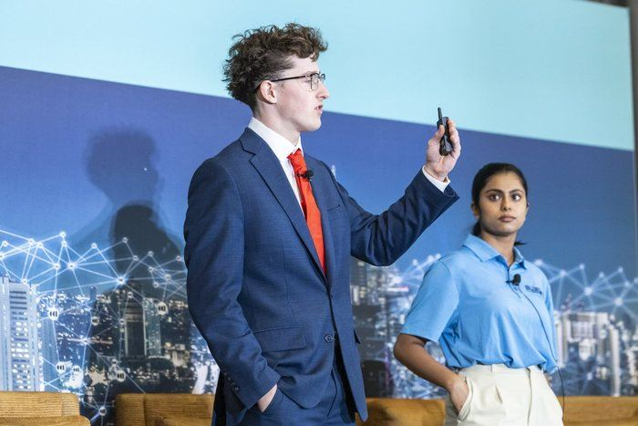

Applied AI for national security.
I’m a National Security Technical Program Manager at Scale AI in Washington, DC, working on agents and evals — getting AI deployed and tested for the people who protect this country.
Work
Six roles in three years. I chose each one for what it would teach me, not for how it would read.
Scale AI National Security TPM · 2026–
Washington, DC. I direct a core mission area of Scale’s largest contract, the $151B Golden Dome initiative, developing and deploying cyber effects with a cross-functional team of 50+ engineers.
I also lead a multi-million-dollar AI security program for an Intelligence Community customer, driving customer syncs, roadmap planning and team coordination, and have authored 10+ strategic reports for IC leadership.
Federal Bureau of Investigation Computer Scientist · 2026
Chantilly, Virginia, in the Cyber Division. I built 153 Splunk panels ingesting over a million network packets, architected AWS VPC Flow Log logging, and presented my findings directly to the Chief AI Officer.
I also wrote 10+ Python and Scapy traffic generators to automate operations and run hands-on technical training for FBI personnel.
HiddenLayer Solutions Architect · 2026
Washington, DC. I deployed five air-gapped AI security environments for defense and Intelligence Community customers on AWS CloudFormation — model scanning, vulnerability detection and runtime threat protection.
I drove federal sales and capture through demos, RFIs and solution architecture, contributing to the company’s selection for the MDA’s $151B SHIELD IDIQ during a year of 10x ARR growth. I left with an L6 return offer.
Blue Sky Innovators R&D Engineer · 2025–26
Reston, Virginia, on a DoW-funded R&D team. I led a Python agentic pipeline with GitHub and GitLab integrations and air-gapped LLMs for automated code flaw detection, and presented the architecture to GitHub’s CISO and 200+ defense stakeholders.
Amazon Web Services Cloud Engineer · 2025
Arlington, Virginia, in Professional Services. I engineered a full-stack RAG-based AI tool in Python and AWS CDK across 40+ cloud services including Bedrock, S3 and OpenSearch. It shipped in half the projected timeline at under 30ms latency for 100+ concurrent users, tripled the project’s KPIs and expanded its scope by more than 200%.
I also hosted a company-wide generative AI workshop for 50+ attendees on language models, NLP, vector embeddings and prompt engineering.
ManTech Technical Engineer · 2024–25
Herndon, Virginia. My first job, and I was the only freshman on the team. I built a Python and Google Cloud inventory tracking application for the Army under the $850M ALECS program, cutting latency by 45% and improving performance by 25%, and presented the final build to the CEO.
I ran identity and access management and Active Directory for 10,000+ users alongside the CIO, started the company’s first campus outreach program, ranked top performer for ticket closures in Q1 2025, and was promoted twice in under a year.
Along the way: network and data engineering for Rockingham County Public Schools, threat intelligence for the Cyber Security Forum Initiative, engineering at Solvitur Systems, and Deloitte’s DLAMP program.
About

Before Scale I spent time across the FBI, AWS, HiddenLayer, Blue Sky Innovators and ManTech — architecting cloud and AI solutions, contributing to DoW-funded research, and supporting federal programs worth hundreds of millions to billions.
I graduated from the James Madison University Honors College a year early as valedictorian of my major, and I’m finishing a master’s in computer science at Georgia Tech on a 4.00. I hold 46 certifications and an active TS/SCI clearance with Full Scope Polygraph.
- 46 certifications
- $151B program scope
- 50+ engineers led
- 3.97 GPA, graduated a year early
Projects
- GTG-1002 & APT1 / PLA Unit 61398
- A case study tracing how state-aligned intrusion tradecraft changed across two decades. Georgia Tech, 2026.
- Wireless attack detection for UAV networks
- An end-to-end machine learning security framework that detects and classifies wireless attacks across drone networks. JMU, 2026.
- Friend(s)
- Principal software engineer on a consumer application built across EC2, Cognito, S3 and API Gateway. Helped secure more than $50,000 in funding.
- RCPS telecom rebuild
- A division-wide allocation system across 23 schools, with analysis that reached the Governor of Virginia.
- MusicCPR
- A music education platform for underrepresented communities. I was the only freshman selected for the team.
Recognition
In August 2026 the FBI gave me a Certificate of Appreciation for contributions making a significant impact on its Cyber Division.
- Distinguished Graduate
- James Madison University, 2026.
- Outstanding Academics in IT
- First in GPA within my major, graduating a year early.
- Outstanding Student in Honors
- Presented to the university president; taught Honors coursework; a $5,000 scholarship.
- Service & Outreach Award
- For founding the IT Ambassador program as a freshman and serving through graduation.
- First place, VMI Cyber Competition
- Leading the JMU Cyber Defense Club as executive officer, 2025.
What people say
William’s trajectory is going to the moon. He never asks for shortcuts, only for context that accelerates his own learning. That combination of initiative and humility is rare even among seasoned consultants.
Adam Bluhm — Principal AI Security Architect, HiddenLayer
Without question, one of the most promising young professionals I’ve come across. He doesn’t just execute. He engages. He’s not chasing titles. He’s doing the work.
Troy L. Edwards Jr. — Engagement Manager, AWS
Will is a rare breed. The first one in and the last to leave, not to clock hours, but because he’s genuinely obsessed with the pursuit of excellence.
Cole W. — Business Owner & Cybersecurity Researcher
Education
- M.S. Computer Science — Georgia Tech
- In progress, specializing in artificial intelligence. 4.00 / 4.00.
- B.S. Information Technology — James Madison University
- Honors College, 2023–2026. 3.97 / 4.00, valedictorian of my major, President’s List every semester, graduated a year early. Founded TechLink, the first IT club at JMU.
46 certifications across AWS, CompTIA, Google, Microsoft, Anthropic and Cisco — including the AWS Solutions Architect and Generative AI Developer professional certifications.
Press & speaking
- Securing America’s Decision Advantage with AI Agents — Scale AI
- How I Cracked AWS, FBI, Scale AI as a Fresher — Cloud with Raj, 2026
- Keeping Rockingham County schools connected and secure — RockTown Now, 2026
- Stewardship Luncheon keynote — the only solo student speaker
- On graduating early — JMU Admissions


